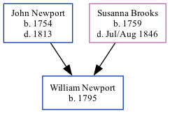

William Newport 1795 -
[ Home ] | [ Calendar ] | [ Surnames Index ] | [ Family History ]The child of John Newport and Susanna Brooks, William Newport, the four times great-uncle of <a href="I1.html">Nigel Horne</a>, was born in Great Hardres, Kent, England in 1795<span class="citation">1,2</span>.</p><p>Throughout his life, he lived in Kingston, Kent, England in 1861<span class="citation">1</span>; and at St Paul's, Canterbury, Kent in 1871<span class="citation">2</span>.
Parents
- John was born in 1754
- Susanna was born in 1759
Citations
- 1861 England Census Online publication - Provo, UT, USA: The Generations Network, Inc., 2005.Original data - Census Returns of England and Wales, 1861. Kew, Surrey, England: The National Archives of the UK (TNA): Public Record Office (PRO), 1861. Data imaged from the National
- 1871 England Census Online publication - Provo, UT, USA: The Generations Network, Inc., 2004.Original data - Census Returns of England and Wales, 1871. Kew, Surrey, England: The National Archives of the UK (TNA): Public Record Office (PRO), 1871. Data imaged from the National
Family Tree
Generated by Ged2Site. Last updated on Jul 20, 2025